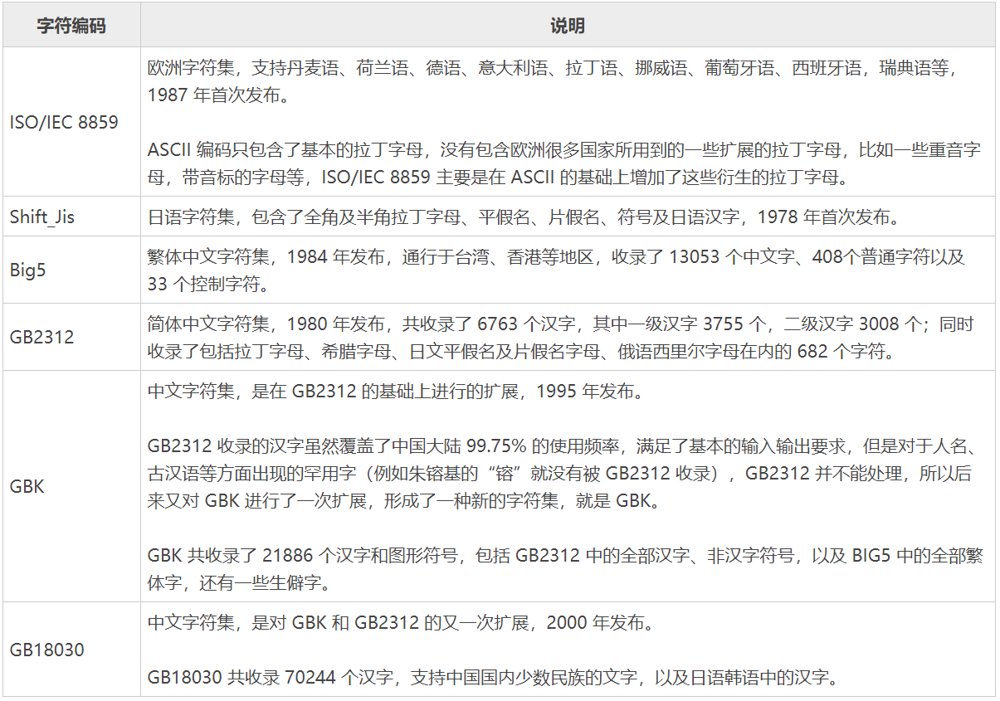

1_编程基础（2）
【本文结构】
7、字符集/字符编码
ASCII编码，将英文存储到计算机
拉丁字母
ASCII编码
ASCII码和C语言
GB2312编
码和GBK编码，将中文存储到计算机
各国的字符编码
中文编码方案
Unicode字符集，将全世界的文字存储到计算机
Unicode：统一码/万国码
Unicode字符集是如何存储的
窄字符和宽字符
【7
字符集/字符编码
】
计算机是以二进制的形式来存储数据的，它只认识 0 和 1 两个数字，
特定的文字和它们在计算机中的二进制必然有一套相对应的规范，
这样的一套规范就称为
字符集（Character Set）
或者
字符编码（Character Encoding）
。
严格来说，字符集和字符编码不是一个概念：
字符集定义了文字和二进制的对应关系，为字符分配了唯一的编号，
字符编码规定了如何将文字的编号存储到计算机中。
进一步的区分，请参见本节下面的第三小节“
Unicode字符集，将全世界的文字存储到计算机
”。
ASCII编码，将英文存储到计算机
拉丁字母
拉丁字母也叫
罗马字母
，它源自希腊字母，是当今世界上使用最广的字母系统。基本的拉丁字母就是我们经常见到的 ABCD 等26个英文字母。
拉丁字母、阿拉伯字母、斯拉夫字母（西里尔字母）被称为世界三大字母体系。
拉丁字母原先是欧洲人使用的，后来由于
欧洲殖民主义
，导致这套字母体系在全球范围内开始流行，美洲、非洲、澳洲、亚洲都没有逃过西方文化的影响。中国也是，我们现在使用的拼音其实就是拉丁字母，是不折不扣的
舶
来品
。
后来，很多国家对 26 个基本的拉丁字母进行了扩展，以适应本地的语言文化。最常见的扩展方式就是加上变音符号，例如汉语拼音中的
ü
，就是在
u
的基础上加上两个小点演化而来；再如，
áà
就是在a的上面标上音调。
总结：
基本拉丁字母
就是 26 个英文字母；
扩展拉丁字母
就是在基本的 26 个英文字母的基础上添加变音符号、横线、斜线等演化而来，每个国家都不一样。
ASCII编码
ASCII 是“American Stan
dard Code for Information Interchange”的缩写，意思是“美国信息交换标准代码”。
看这个名字就知道，这套编码是美国人给自己设计的，他们并没有考虑欧洲那些扩展的拉丁字母，也没有考虑韩语和日语，我大中华几万个汉字更是不可能被重视。
但这也无可厚非，美国人自己发明的计算机，当然要先解决自己的问题。
ASCII 的标准版本于 1967 年第一次发布，最后一次更新则是在 1986 年，迄今为止共收录了 128 个字符，包含了
33 个控制字符（具有某些特殊功能但是无法显示的字符）和 95 个可显示字符
：
基本的拉丁字母（英文字母）
阿拉伯数字（也就是 1234567890）
标点符号（
,.!
等）
特殊符号（
@#$%^&
等）
以及一些具有控制功能的字符（往往不会显示出来）。
在 ASCII 编码中，大写字母、小写字母和阿拉伯数字都是连续分布的（见下表），这给程序设计带来了很大的方便。
例如要判断一个字符是否是大写字母，就可以判断该字符的 ASCII 编码值是否在 65~90 的范围内。
ASCII 码一览表及各个字符的解释
ASCII码和C语言
稍微有点C语言基本功的读者可能认为C语言使用的就是 ASCII 编码，字符在存储时会转换成对应的 ASCII 码值，在读取时也是根据 ASCII 码找到对应的字符。这句话是错误的。
C语言有时候使用 ASCII 编码，有时候却不是，而是使用后面两节中即将讲到的 GBK 编码和 Unicode 字符集
。
具体内容请参见
网站原文章《
C语言到底使用什么编码？谁说C语言使用ASCII码，真是荒谬！
》和本笔记本“
3_变量和数据类型（2）
”中字符变量相关节的介绍。
GB2312编
码和GBK编码，将中文存储到计算机
各国的字符编码
计算机是一种改变世界的发明，其在全世界流行的过程中
遇到的一个棘手问题就是字符编码，这是因为计算机是美国人发明的，它使用的是 ASCII 编码，只能显示英文字符，对汉语、韩语、日语、法语、德语等其它国家的字符无能为力。
为了让本国公民也能使用上计算机，各个国家（地区）也开始效仿 ASCII，开发了自己的字符编码。这些字符编码和 ASCII 一样，只考虑本国的语言文化，不兼容其它国家的文字。
这样做的后果就是，一台计算机上必须安装多套字符编码，否则就不能正确地跨国传递数据，例如在中国编写的文本文件，拿到日本的电脑上就无法打开，或者打开后是一堆乱码。
下表列出了常见的字符编码：

由于 ASCII 先入为主，已经使用了十来年了，现有的很多软件和文档都是基于 ASCII 的，所以后来的这些字符编码都是在 ASCII 基础上进行的扩展，它们都兼容 ASCII，以支持既有的软件和文档。
兼容 ASCII 的含义是，原来 ASCII 中已经包含的字符，在国家编码（地区编码）中的位置不变（也就是编码值不变），只是在这些字符的后面增添了新的字符。
如何存储
各国自己的字符非常多，有成千上万个，一个字节肯定是不够的（一个字节最多存储 2
8
= 256 个字符），所以要进行扩展，用两个、三个甚至四个字节来表示。
在制定字符编码时还要考虑内存利用率的问题。
为了达到「
既能存储本国字符，又能节省内存
」的目的，Shift-Jis、Big5、GB2312 等都采用
变长的编码方式
：
对于原来的 ASCII 编码部分，用一个字节存储足以；
对于本国的常用字符（例如汉字、标点符号等），一般用两个字节存储；
对于偏远地区，或者极少使用的字符（例如藏文、蒙古文等），才使用三个甚至四个字节存储。
总起来说，越常用的字符占用的内存越少，越罕见的字符占用的内存越多
。
中文编码方案
GB2312 --> GBK --> GB18030 是中文编码的三套方案，出现的时间从早到晚，收录的字符数目依次增加，并且
向下兼容
。
GB2312 和 GBK 收录的字符数目较少，用 1~2个字节存储；
GB18030 收录的字符最多，用1、2、4 个字节存储。
从整体上讲，GB2312 和 GBK 的编码方式一致，具体为：
对于
ASCII 字符
，使用
一个字节存储
，并且该字节的
最高位是 0
，这和 ASCII 编码是一致的，所以说 GB2312
完全兼容 ASCII
。
对于
中国的字符
，使用
两个字节存储
，并且规定每个字节的
最高位都是 1
。
由于单字节和双字节的最高位不一样，所以字符处理软件很容易区分一个字符到底用了几个字节。
GB18030 为了容纳更多的字符，并且要区分两个字节和四个字节，所以修改了编码方案，具体为：（此处略去具体内容）
当字符占用两个或者四个字节时，GB18030 编码要检测两次，处理效率比 GB2312 和 GBK 都低。
GBK编码最流行
GBK 于 1995 年发布，这一年也是互联网爆发的元年，国人使用电脑越来越多，也许是 GBK 这头猪正好站在风口上，它就飞起来了，
后来的中文版 Windows 都将 GBK 作为默认的中文编码方案
。
注意，这里说 GBK 是默认的中文编码方案，
并不是说 Windows 默认支持 GBK
。
Windows 在
内核层面使用的是 Unicode 字符集
（严格来说是
UTF-16 编码
），但它也给用户留出了选择的余地
，
如果用户不希望使用 Unicode，而是希望使用中文编码方案，那么
这个时候 Windows 默认使用 GBK
（当然，你可以选择使用 GB2312 或者 GB18030，不过一般没有这个必要）。
实际上，
中文版 Windows 下的很多程序默认使用的就是 GBK 编码
，例如用记事本程序创建一个 txt 文档、在 cmd 或者控制台程序（最常见的C语言程序）中显示汉字、用 Visual Studio 创建的源文件等，使用的都是 GBK 编码。
可以说，GBK 编码在中文版的 Windows 中大行其道。
Unicode字符集，将全世界的文字存储到计算机
Unicode：统一码 / 万国码
Unicode 希望统一所有国家的字符编码。
计算机只要安装了这一种字符编码，就能支持使用世界上所有的文字，再也不会出现乱码，再也不需要转码了，这对计算机的数据传递来说就很方便！
ASCII、GB2312、GBK、Shift_Jis、ISO/IEC 8859 等地区编码都是各个国家为了自己的语言文化开发的，不具有通用性，在一种编码下开发的软件或者编写的文档，拿到另一种编码下就会失效，必须提前使用程序转码，非常麻烦。
Unicode 于 1994 年正式公布第一个版本，现在的规模可以容纳 100 多万个符号，是一个很大的集合。
Unicode 包含的字符以及各国字符的分布情况
Windows、Linux、Mac OS 等常见操作系统都已经从底层（内核层面）开始支持 Unicode，大部分的网页和软件也使用 Unicode，Unicode 是大势所趋。
由于历史原因，目前的计算机仍然安装了 ASCII 编码以及 GB2312、GBK、Big5、Shift-JIS 等地区编码，以支持不使用 Unicode 的软件或者文档。内核在处理字符时，一般会将地区编码先转换为 Unicode，再进行下一步处理。
Unicode 字符集是如何存储的
严格来说，字符集和字符编码不是一个概念：
字符集定义了字符和数字的对应关系，为每个字符分配了唯一的编号
。
以将字符集理解成一个很大的表格，它列出了所有字符和数字的对应关系，计算机显示文字或者存储文字，就是一个查表的过程。
字符编码规定了如何将字符的编号存储到计算机中
。
如果使用了类似 GB2312 和 GBK 的变长存储方案（不同的字符占用的字节数不一样），那么为了区分一个字符到底使用了几个字节，就不能将字符的编号直接存储到计算机中，字符编号在存储之前必须要经过转换，在读取时还要再逆向转换一次，这套转换方案就叫做
字符编码
。
有的字符集在制定时就考虑到了编码的问题，是和编码结合在一起的，例如 ASCII、GB2312、GBK、BIG5 等，所以无论称作字符集还是字符编码都无所谓，也不好区分两者的概念。
而有的字符集只管制定字符的编号，至于怎么存储，那是字符编码的事情，Unicode 就是一个典型的例子，它只是定义了全球文字的唯一编号，我们还需要 UTF-8、UTF-16、UTF-32 这几种编码方案将 Unicode 存储到计算机中。
所以说，
Unicode 是一套字符集，而不是一套字符编码
。
Unicode 可以使用的编码方案有三种，分别是：
UTF-8：一种
变长
的编码方案，使用 1~6 个字节来存储；
UTF-32：一种
固定长度
的编码方案，不管字符编号大小，始终使用 4 个字节来存储；
UTF-16：介于 UTF-8 和 UTF-32 之间，使用 2 个或者 4 个字节来存储，长度
既固定又可变
。
UTF 是 Unicode Transformation Format 的缩写，意思是“Unicode转换格式”，后面的数字表明至少使用多少个比特位（Bit）来存储字符。
这三种编码方案的具体规则，请参见原文。
Unicode 字符集三种编码方案比较
只有 UTF-8 兼容 ASCII
，
UTF-32 和 UTF-16 都不兼容 ASCII，因为它们没有单字节编码。
UTF-8
UTF-8 使用尽量少的字节来存储一个字符，不但能够节省存储空间，而且在网络传输时也能节省流量。
所以很多纯文本类型的文件（例如各种编程语言的源文件、各种日志文件和配置文件等）
以及绝大多数的网页（例如百度、新浪、163等）都采用 UTF-8 编码。
UTF-8 的缺点是效率低，不但在存储和读取时都要经过转换，而且在处理字符串时也非常麻烦。
例如，要在一个 UTF-8 编码的字符串中找到第 10 个字符，就得从头开始一个一个地检索字符，这是一个很耗时的过程，因为 UTF-8 编码的字符串中每个字符占用的字节数不一样，如果不从头遍历每个字符，就不知道第 10 个字符位于第几个字节处，就无法定位。
不过，随着算法的逐年精进，UTF-8 字符串的定位效率也越来越高了，往往不再是槽点了。
UTF-32
UTF-32 是“以空间换效率”，正好弥补了 UTF-8 的缺点，UTF-32 的优势就是效率高。UTF-32 在存储和读取字符时不需要任何转换，在处理字符串时也能最快速地定位字符。
例如，在一个 UTF-32 编码的字符串中查找第 10 个字符，很容易计算出它位于第 37 个字节处，直接获取就行，不用再逐个遍历字符了，没有比这更快的定位字符的方法了。
但是，UTF-32 太占用存储空间了，在网络传输时也会消耗很多流量。
我们平常使用的字符编码值一般都比较小，用一两个字节存储足以，用四个字节简直是暴殄天物，甚至说是不能容忍的，所以
UTF-32 在应用上不如 UTF-8 和 UTF-16 广泛
。
UTF-16
UTF-16 可以看做是 UTF-8 和 UTF-32 的折中方案，它平衡了存储空间和处理效率的矛盾。对于常用的字符，用两个字节存储足以，这个时候 UTF-16 是不需要转换的，直接存储字符的编码值即可。
Windows 内核、.NET Framework、Cocoa、Java String 内部采用的都是 UTF-16 编码。
UTF-16 是幕后的功臣，我们在编辑源代码和文档时都是站在前台，所以一般感受不到，其实很多文本在后台处理时都已经转换成了 UTF-16 编码。
不过，
UNIX 家族的操作系统（Linux、Mac OS、iOS 等）内核都采用 UTF-8 编码
，我们就不去争论谁好谁坏了。
窄字符和
宽字符
窄字符 / 多字节字符
有的编码方式采用 1~n 个字节存储，是变长的，例如 UTF-8、GB2312、GBK 等；如果一个字符使用了这种编码方式，我们就将它称为多字节字符，或者窄字符。
宽字符
有的编码方式是固定长度的，不管字符编号大小，始终采用 n 个字节存储，例如 UTF-32、UTF-16 等；如果一个字符使用了这种编码方式，我们就将它称为宽字符。
Unicode 字符集可以使用窄字符的方式存储，也可以使用宽字符的方式存储；
GB2312、GBK、Shift-JIS 等国家编码一般都使用窄字符的方式存储；
ASCII 只有一个字节，无所谓窄字符和宽字符。